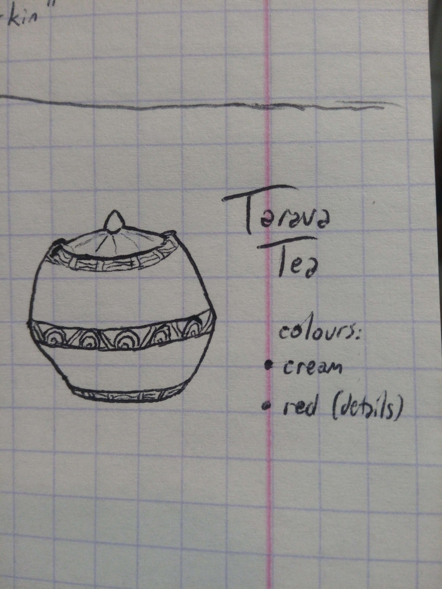

|
Asset Lifecycle Developer(s): Status: 👁️ Unclaimed Asset Status Priority: Medium Type: 🍵 Food / Alchemy / Ingredient Files | |
Tea made out of brewing Tarava flowers, sweet in taste. Inspired visually (colour and size-wise) by Tamriel_Data's Rotmeth, but should feel more elegant. Feel free to also use more drinks claim as a reference, having in mind the two CAs here however.
|
 Toma400
 Toma400 TD's Rotmeth |